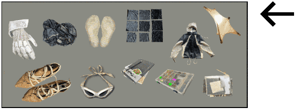
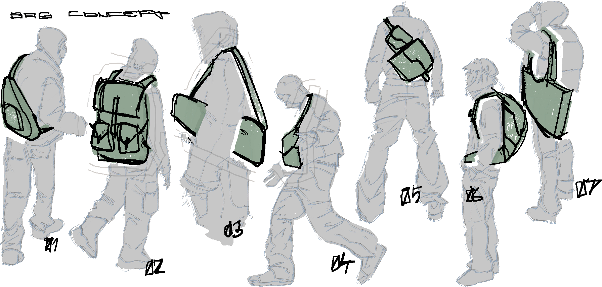
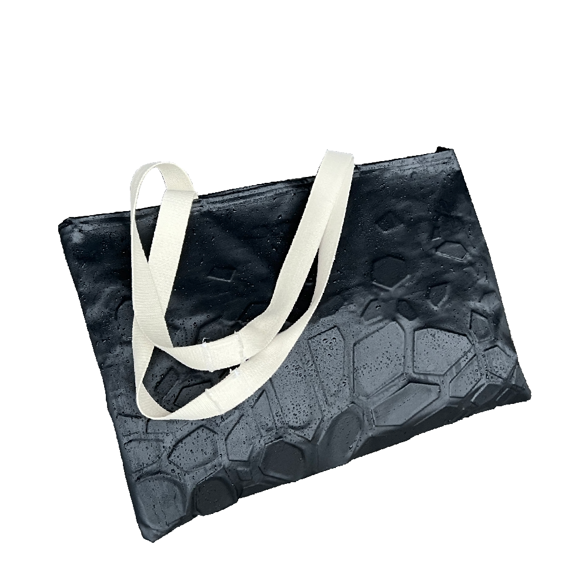
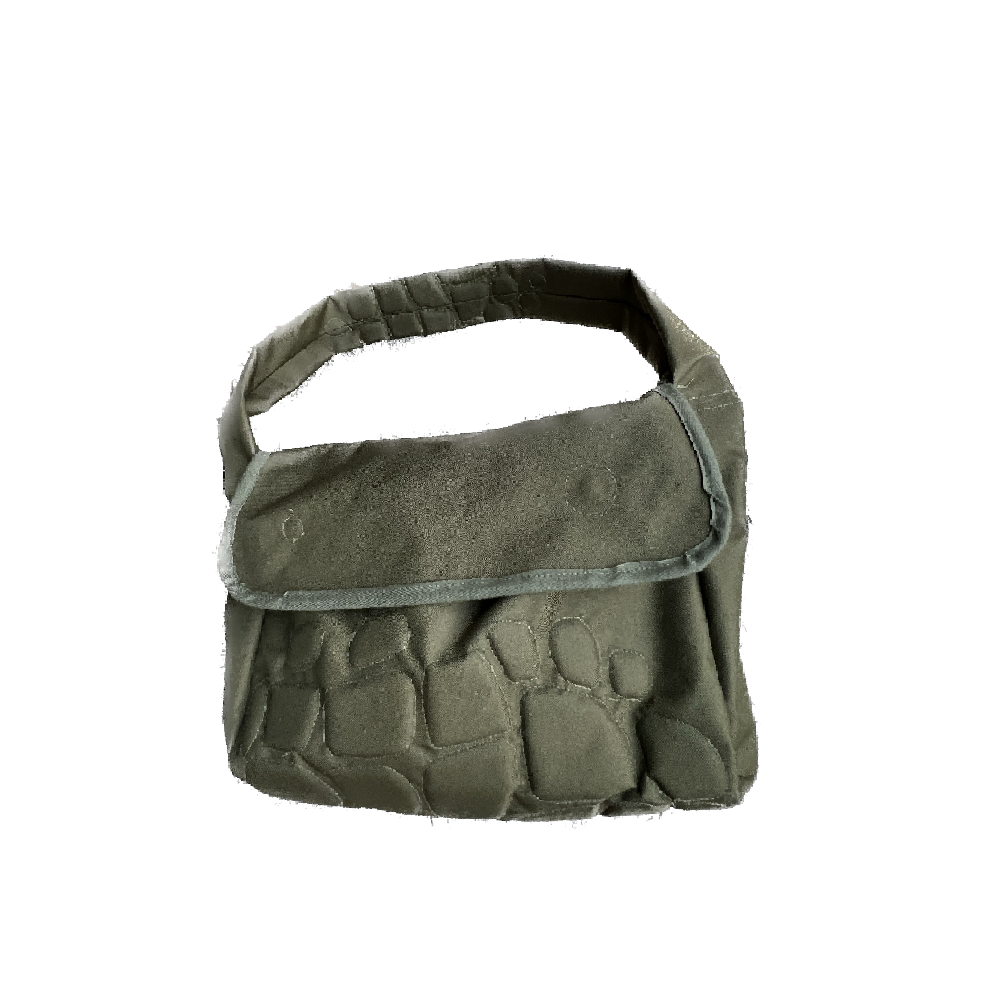
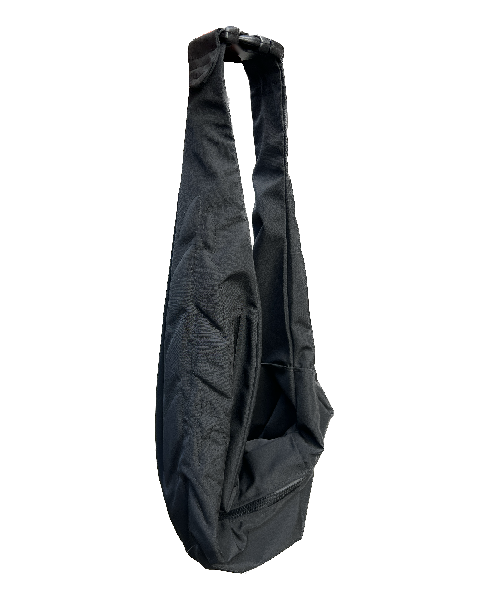
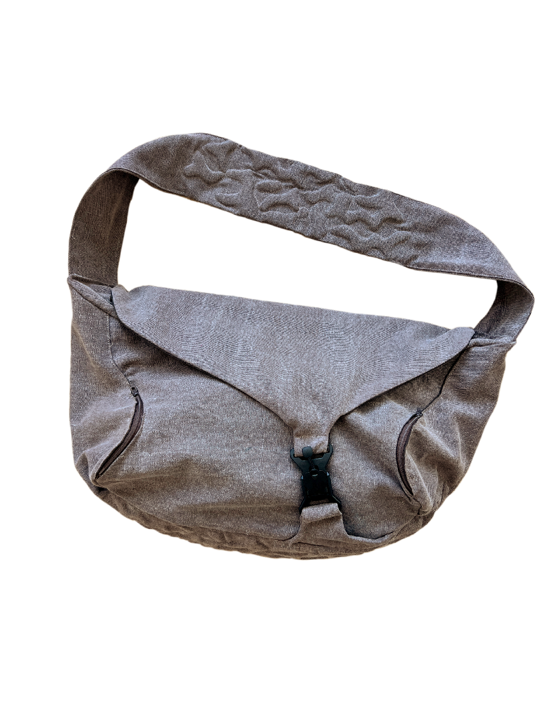

Padded bag Collection
IN PROGRESS...
> repurposed laser cut foam padding
> canvas/ cordura/ nylon shell
> fidlock hardware
Exploration of padded fabric properties brought me to using different textures that allow every padded sample of fabric to band and move in it’s own unique way.
By utilizing fractured foam parts, I achieved a perfect balance between protection and comfort. For the padding filler, I experimented with various materials such as wood, 3d printed TPU mesh or plastic. Eventually, I settled on repurposed foam that is laser cut and later sewn in between the fabrics. This padding technique transforms an ordinary bag silhouette into a living creature-like accessory. The versatility of this technique is showcased in a growing collection of handmade bags.


click bag to view more...

click bag to view more...

click bag to view more...

click bag to view more...